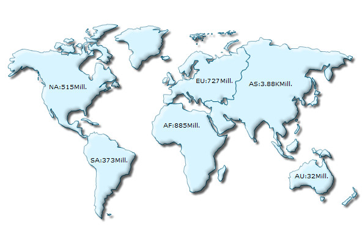
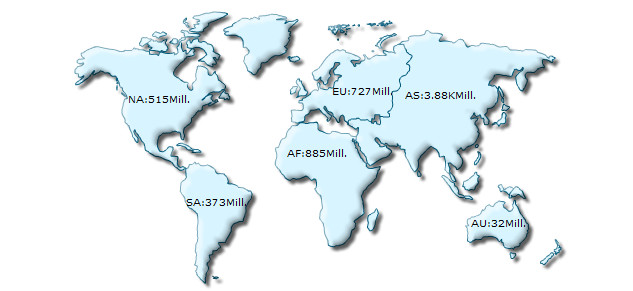

| Changing map dimensions |
|
In this page, we will see how to change map dimensions (size). You can set the dimensions of the map either in terms of pixels or specify the percentage width and height of the map relative to its container (a DIV or any other HTML element). If the size is specified in pixels, then the map's dimensions remain constant, irrespective of the size of the container. However, if the width and height of the map are set as percentage of the container, then the map automatically adapts itself to the change in size of the container. Code examples discussed in this section are present in Download Package > Code > MyFirstMap folder. |
| Setting the width and height in pixel values |
|
To change the width and height, all you have to do is provide the desired width and height in pixels (without appending px at end of it). Let's see how the change is incorporated in the HTML code. <html>
<head>
<title>My First map using FusionMaps XT - change size</title>
<script type="text/javascript" src="Maps/FusionCharts.js"></script>
</head>
<body>
<div id="mapContainer">FusionMaps XT will load here!</div>
<script type="text/javascript"><!--
var myMap = new FusionCharts( "Maps/FCMap_World.swf",
"myMapId", "600", "400", "0" );
myMap.setXMLUrl("Data.xml");
myMap.render("mapContainer");
// -->
</script>
</body>
</html>
See it live! In the above code, we have changed the map's width to 600 pixels and height to 400 pixels. The map now looks like this:  |
| Setting the width and height in percent values |
You can also set the width and height of the map in terms of percentage. The map will automatically adjust its dimension with respect to the parent HTML container element. Let's see how this is done in HTML: |
<html>
<head>
<title>My First map using FusionMaps XT- change size in percentage</title>
<script type="text/javascript" src="Maps/FusionCharts.js"></script>
</head>
<body>
<div id="mapContainer" style="width:800px; height:300px;">
FusionMaps XT will load here!</div>
<script type="text/javascript"><!--
var myMap = new FusionCharts( "Maps/FCMap_World.swf",
"myMapId", "80%", "100%", "0");
myMap.setXMLUrl("Data.xml");
myMap.render("mapContainer");
// -->
</script>
</body>
</html>
See it live! In the above code, we have set the width of the map to 80% and height to 100%. The DIV with id mapContainer is the container element of the map. Hence, the dimensions of the map will be derived from the dimensions of the mapContainer Div. In this example, we have set the width of the DIV to 800 pixels and its height to 300 pixels. So, the map's size is automatically set to 640 x 300. The map will look like the image below:  In certain cases, if the HTML container element itself has not acquired proper width or height (due to error in rendering by browser), the map might look squeezed, or it may not render in the first place. If this happens, then you'll have to specify the map's dimensions in pixels. |
| Dynamic resize feature of maps |
|
Starting FusionMaps XT, maps can dynamically resize itself when the parent container resizes. For this you will need to:
Whenever the container element resizes, the map will also dynamically resize itself instantly. In the example below, we have created a very basic sample where the map will fill up the entire space in the Web browser and if the browser's size is changed, the map will resize itself. Note, that the width and height of the BODY and DIV elements are set using CSS (cascading style sheet). |
<html>
<head>
<title>My First map using FusionMaps XT
- Using dynamically resizable map</title>
<script type="text/javascript" src="Maps/FusionCharts.js"></script>
</head>
<body style="height:100%;">
<div id="mapContainer" style="height:100%;" >
FusionMaps XT will load here</div>
<script type="text/javascript"><!--
var myMap = new FusionCharts("Maps/FCMap_World.swf",
"myMapId", "100%", "100%", "0");
myMap.setXMLUrl("Data.xml");
myMap.render("mapContainer");
// -->
</script>
</body>
</html>
See a similar example live! In the above code we have:
Click here to see another example of dynamic resizing. In this example, the container element of the map can be resized through dragging a resizable element at the bottom-left corner. Drag the resizable element and notice how the map gets automatically resized as per the size of the container element. |